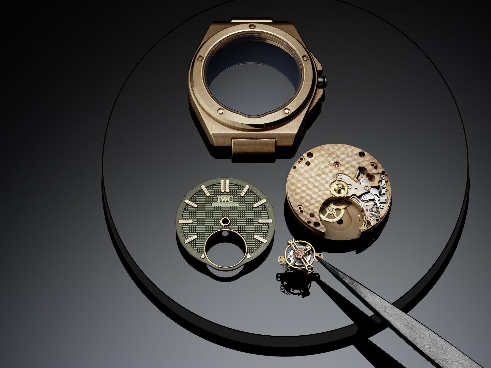
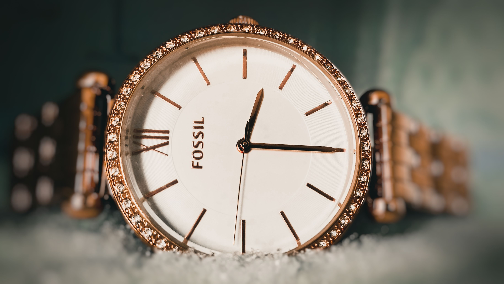
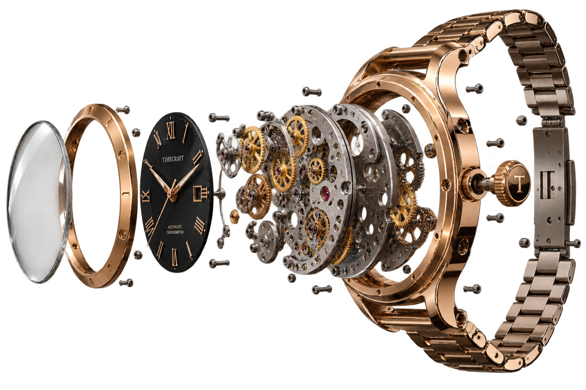
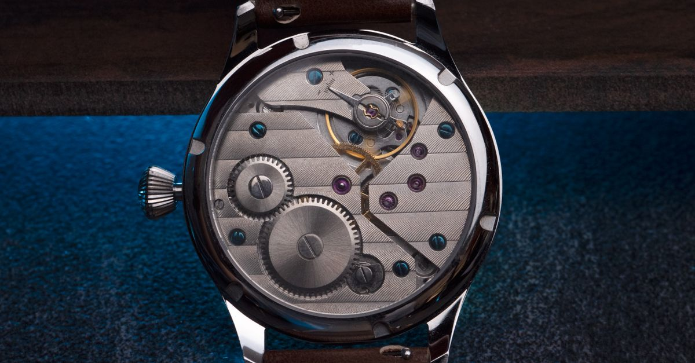

Kadran
Zamanın yüzü ve tasarımın merkezi.
THE ART OF TIME
Her saniyesinde ustalık, her detayında mükemmellik saklı.
KOLEKSİYONU KEŞFET ↓
PRECISION IS AN ART
TIMECRAFT PHILOSOPHY
Gerçek saatçilik yalnızca zamanı göstermek değildir. Mühendislik, sanat ve ustalığın kusursuz birleşimidir.
THE DETAILS

Zamanın yüzü ve tasarımın merkezi.
Mekanizmayı koruyan güçlü yapı.
Görünümü tamamlayan koruyucu katman.
INSIDE THE WATCH
Bir saatin dış görünüşünün arkasında yüzlerce hassas parçanın uyumu bulunur.

MECHANICAL ENGINEERING

Hareketi mekanizma içerisinde aktarır.
Mekanik enerjiyi depolar.
Zamanın düzenli ilerlemesine yardımcı olur.
OUR COLLECTION